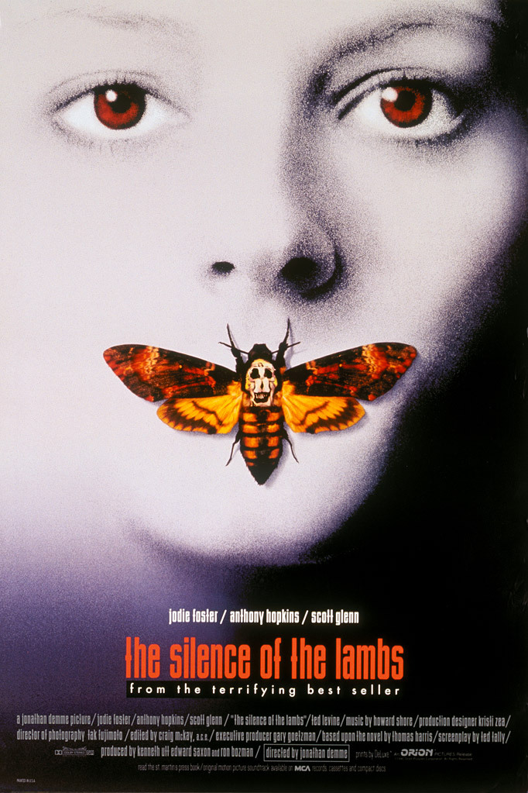

Milyonlarca film, TV şovu ve keşfedilecek kişi.Şimdi Keşfedin
Popüler Filmler
I'm thinking of ending things
I'm Thinking of Ending Things 2020 Amerikan yapımı
psikolojik gerilim filmidir. Iain Reid'ın aynı adlı
romanından uyarlanan filmin yönetmenliği ve
yapımcılığını Charlie Kaufman üstlenmiştir. Film, erkek
arkadaşının ailesiyle tanışmak üzere yolculuğa çıkan
genç bir kadının başından geçenleri konu almaktadır.
The Lobster
The Lobster, 2015 yapımı Yorgos Lanthimos'un yönettiği
absürt distopik bir kara mizah filmidir. Lanthimos
filmin senaryo yazımı ve yapım ekibinde de yer
almaktadır. Filmin diğer yapımcıları Ceci Dempsy, Ed
Guiney ve Lee Magiday; senaristi ise Efthimis
Filippou'dur.

The Silence of the Lambs
Kuzuların Sessizliği, yazar Thomas Harris'in aynı adlı
romanından beyaz perdeye aktarılan, yönetmenliğini
Jonathan Demme'nin yaptığı, 1991 yapımı psikolojik
gerilim türündeki filmdir.